Práctica: Monitorización de Sistemas Linux
1 Requisitos previos
Una máquina con Ubuntu Server 26.04.
Acceso con un usuario con permisos sudo.
Conexión a Internet para instalar paquetes.
Una terminal local o conexión SSH.
Al menos 2 GB de RAM recomendados para realizar las pruebas con comodidad.
2 Normas de seguridad
No ejecutar esta práctica en un servidor de producción real.
No detener servicios críticos.
No matar procesos desconocidos.
No modificar configuraciones permanentes salvo que se indique.
No borrar logs del sistema.
No ejecutar pruebas de carga durante más tiempo del indicado.
No cambiar permisos de archivos del sistema.
No ejecutar comandos destructivos como rm -rf /, mkfs, dd sobre discos reales o similares.
3 Estado general del sistema
Ver la versión del sistema operativo
cat /etc/os-release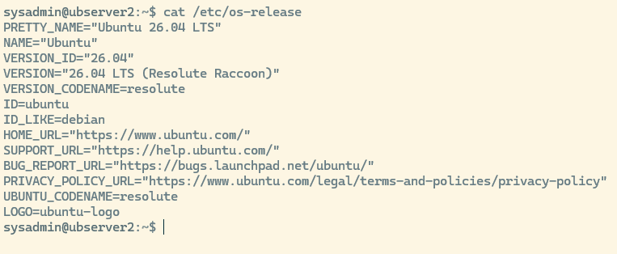
Ver información general del equipo:
hostnamectlMuestra información del equipo, como nombre del host, sistema operativo, kernel, arquitectura y tipo de máquina.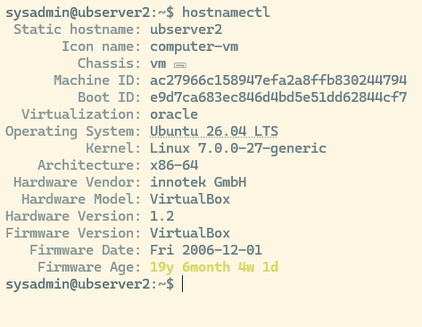
Ver versión del kernel
uname -anombre del kernel, versión, arquitectura y fecha de compilación.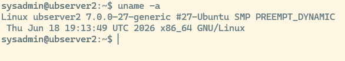
l7.0.0
Ver CPU y número de procesadores lógicos:
lscpumuestra información de la cpu
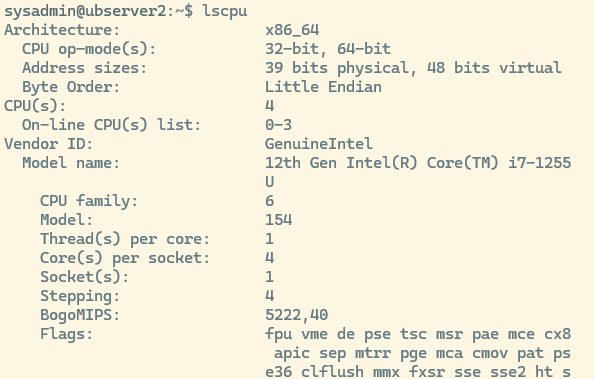
nproc devuelve el numero de procesadores lógicos: 4
- Ver tiempo encendido y carga media: Comando:
uptimeMuestra la hora actual, el tiempo que lleva encendido el sistema y los usuarios conectados. Los tres valores finales son la carga media del sistema en 1, 5 y 15 minutos.
12:17:07 up 2:48, 2 users, load average: 0,00, 0,02, 0,00Ver uso de memoria: Comando:
free -hMuestra la memoria RAM y swap en formato legible.
El dato más útil suele ser available, porque indica una estimación de la memoria disponible para nuevas aplicaciones sin recurrir a swap.
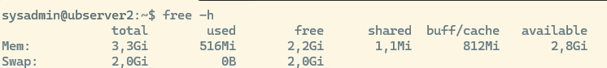
Ver espacio en disco: Comando:
df -hTMuestra el espacio usado y libre de los sistemas de archivos montados.-h: muestra tamaños en formato legible.-T: muestra el tipo de sistema de archivos.
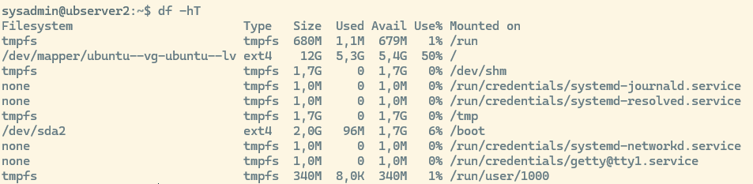
Ver discos y particiones: Comando:
lsblk -o [nombres de columnas a mostrar]. Ejemplolsblk -o NAME,SIZE,TYPE,FSTYPE,MOUNTPOINTS,MODEL
Nos fijaremos en el resultado del arbol sda, vda, nvme0n1 o similares
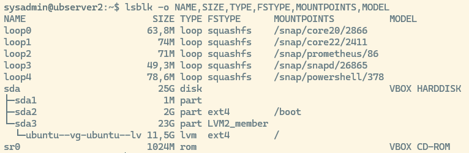
- Ver direcciones de red:
ip -br aMuestra las interfaces de red y sus direcciones IP de forma resumida.
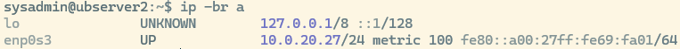
Qué significa enp0s3 :El nombre se divide en partes:
e → Ethernet
n → Network
p0 → está en el bus PCI número 0
s3 → es el slot 3 dentro de ese bus
En resumen: enp0s3 = interfaz Ethernet en el bus PCI 0, slot 3
4 Monitorización en tiempo real con top
Comando: top Muestra una vista dinámica del sistema:
Carga media.
Número de tareas.
Uso de CPU.
Uso de memoria.
Procesos en ejecución.
Procesos que más recursos consumen.
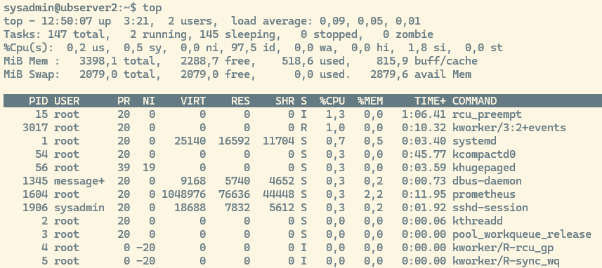
Dentro de top:
p Ordena por uso de CPU.
m Ordena por uso de memoria.
q Sale de top.
Ejecutar top en modo no interactivo:
Comando: top -b -n 1 | head -n 20 Las opciones significan:
-b: modo batch, útil para guardar o mostrar salida en terminal.
-n 1: toma una sola muestra.
head -n 20: muestra solo las primeras 20 líneas, por defecto ordenadas por PID
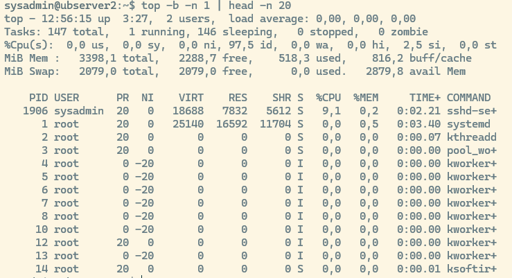
Para ordenar por columnas determinadas y conseguir así los procesos que más recursos están usando:
Ordenar por:
CPU:
top -b -o %CPU -n 1 | head -n 20Memoria:
top -b -o %MEM -n 1 | head -n 20tiempo acumulado de CPU:
top -b -o TIME+ -n 1 | head -n 20
Explicación de la cabecera.
top - 13:14:26 up 3:45, 2 users, load average: 0,00, 0,01, 0,0013:14:26 → hora actual del sistema.
up 3:45 → tiempo que lleva encendido el sistema (3 horas y 45 minutos).
2 users → número de usuarios conectados (por consola o SSH).
load average → carga media del sistema en los últimos 1, 5 y 15 minutos.
Valores bajos (como 0,00) indican que el sistema está ocioso.
Si el número se acerca al número de núcleos de CPU, el sistema está ocupado.
Tasks: 147 total, 1 running, 146 sleeping, 0 stopped, 0 zombietotal → número total de procesos.
running → procesos activos usando CPU.
sleeping → procesos en espera (la mayoría del tiempo).
stopped → procesos detenidos manualmente.
zombie → procesos “muertos” que aún ocupan una entrada en la tabla de procesos (debería ser 0).
%Cpu(s): 0,0 us, 0,2 sy, 0,0 ni, 98,2 id, 0,0 wa, 0,0 hi, 1,6 si, 0,0 stus → porcentaje de CPU usado por procesos de usuario.
sy → porcentaje usado por procesos del sistema (kernel).
ni → procesos con prioridad modificada (nice).
id → CPU inactiva (idle).
wa → tiempo esperando operaciones de E/S (disco, red).
hi → interrupciones de hardware.
si → interrupciones de software.
st → tiempo “robado” por el hypervisor (solo en máquinas virtuales).
MiB Mem : 3398,1 total, 2294,5 free, 511,6 used, 817,1 buff/cache total → memoria física total.
free → memoria libre sin usar.
used → memoria usada por procesos.
buff/cache → memoria usada por buffers y caché del sistema (se libera si hace falta).
MiB Swap: 2079,0 total, 2079,0 free, 0,0 used. 2886,6 avail Memtotal → tamaño total del espacio swap.
free → swap libre.
used → swap usada (0,0 → no se está usando).
avail Mem → memoria disponible para nuevos procesos (RAM libre + caché reutilizable).
top: Permite acciones mientras está corriendo:
k→ matar procesosr→ cambiar prioridad (renice)M→ ordenar por memoriaP→ ordenar por CPUq→ salir
La versión moderna de top es htop. Pruébalo!
5 Memoria libre vs memoria disponible
5.1 Memoria libre (free)
Es RAM sin usar en absoluto. Literalmente, páginas de memoria que no contienen nada útil.
En Linux suele ser baja, porque el kernel intenta usar la RAM para acelerar el sistema (cachés, buffers, page cache…).
Interpretación:
Si es baja → normal.
Si es alta → el sistema no está usando la RAM para cache (poco trabajo o recién arrancado).
5.2 Memoria disponible (available)
Es una estimación de cuánta RAM podría usarse para nuevas aplicaciones sin necesidad de empezar a usar swap.
Incluye:
Memoria libre real
Memoria de caché que puede liberarse rápidamente
Buffers reutilizables
Otras páginas que el kernel puede descartar sin penalización
Interpretación:
Es la métrica realmente útil para saber si te estás quedando sin RAM.
Si baja de ~10–15% → empieza la presión de memoria.
Si baja de ~5% → pronto habrá swap.
5.3 Ejemplo:
free = 200 MB
available = 2500 MBAunque solo haya 200 MB “libres”, el sistema tiene 2.5 GB disponibles para nuevas aplicaciones sin necesidad de swap, porque puede liberar caché y buffers.
6 Análisis estático de procesos con ps
Usaremos el comando ps aux
ps (Process Status) sirve para ver procesos que están ejecutándose en el sistema.
aux:
a(all users): Muestra procesos de todos los usuarios, no solo los tuyos.u(user oriented format): presenta la información en un formato más legiblex(processes without a controlling terminal): incluye procesos que no tienen terminal asociada, como servicios del sistema o demonios.
muestra una lista completa de procesos activos, incluyendo usuario, consumo de CPU y memoria, estado del proceso y el comando que lo lanzó.
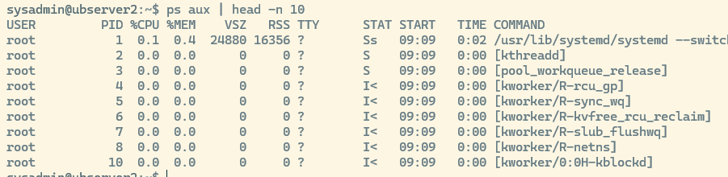
Por defecto ordena los procesos por uso de CPU, de mayor a menor, podemos cambiar ese orden usando argumentos, por ejemplo para ver los que más memoria consumen ps aux --sort=-%mem | head -n 10
Los procesos entre PID 1 y ~100 suelen ser hilos internos del kernel, no programas de usuario.
Se reconocen porque:
El comando aparece entre corchetes:
[kworker/0:0H-kblockd]El PPID es 2, que es el proceso
kthreaddNo tienen TTY
No tienen binario ejecutable en disco
Podemos visualizar un proceso en concreto, por ejemplo usando su PID
ps -fp {pid}
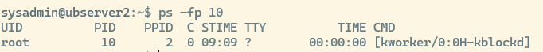
o buscarlo por nombre usando grep: ps aux | grep apache
Ver la ruta real del ejecutable (no funcionará con los hilos internos de kernel):
sudo ls -l /proc/{pid}/exe
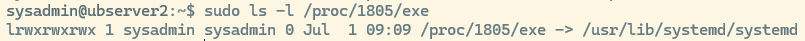
sudo readlink /proc/{pid}/exe
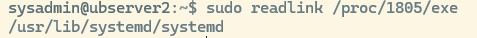
Ver el nombre del proceso: ps -p {PID} -o pid,user,comm,args
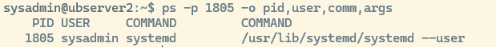
Ver la línea de comandos completa: tr '\0' ' ' < /proc/{PID}/cmdline , echo Muestra el comando completo con el que se inició el proceso con sus parámetros.
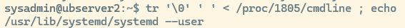
La diferencia esencial entre ps aux y top es que uno te da una foto fija de los procesos en ese instante (ps), mientras que el otro te ofrece una vista dinámica y en tiempo real del sistema.
ps aux: Da información detallada por proceso (PID, usuario, %CPU, %MEM, estado, comando completo). Ideal para búsquedas específicas, scripting y análisis puntual.
top: Muestra métricas agregadas del sistema (carga, memoria total, procesos activos) y luego los procesos ordenados por consumo. Ideal para ver qué está consumiendo recursos en este momento.
7 Árbol de procesos
Nota: Instalar psmisc si es necesario. sudo apt install -y psmisc
pstree muestra los procesos en forma de árbol, indicando qué proceso ha lanzado a cuál.
pstree -p
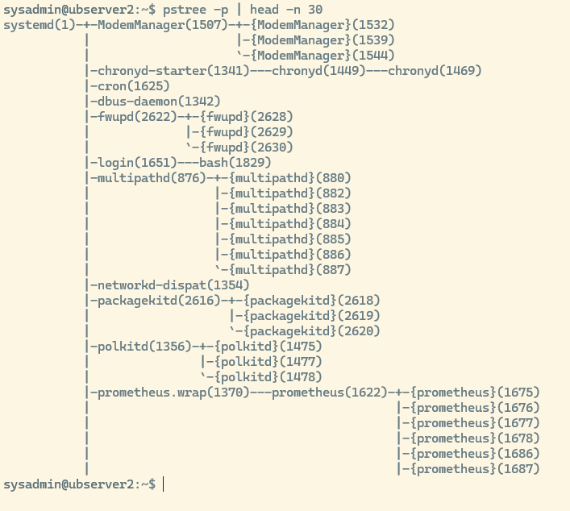
8 Memoria y swap con free y vmstat
free: Muestra memoria total, usada, libre, compartida, caché y disponible. free -h
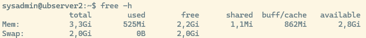
vmstat 1 5 nos muestra 5 mediciones separadas por 1 segundo.| Columna | Significado | Cómo interpretarlo |
|---|---|---|
| r | Procesos esperando CPU | Si es mayor que el número de CPUs, hay cola de ejecución y posible saturación. |
| b | Procesos bloqueados | Valores altos indican esperas de E/S o procesos atascados. |
| swpd | Swap usada | Si crece, el sistema está swapeando; puede causar lentitud. |
| free | Memoria libre | No es crítico si es bajo: Linux usa RAM para cache. |
| buff | Memoria usada como buffers | Normalmente estable; buffers ayudan a la E/S. |
| cache | Memoria usada como caché | Cuanto más alto, mejor rendimiento; se libera si hace falta. |
| si | Swap in (swap → RAM) | Si es >0 de forma continua, hay presión de memoria. |
| so | Swap out (RAM → swap) | Si aumenta, el sistema está expulsando páginas; puede ser grave. |
| bi | Bloques leídos desde disco | Alto = mucha lectura; puede indicar procesos intensivos de E/S. |
| bo | Bloques escritos a disco | Alto = mucha escritura; puede ser por logs, BD, backups, etc. |
| us | CPU usada por usuario | Alto = procesos de usuario consumiendo CPU (normal en cargas). |
| sy | CPU usada por el sistema | Alto = kernel ocupado; puede indicar E/S intensa o interrupciones. |
| id | CPU inactiva | Alto = sistema relajado; bajo = CPU ocupada. |
| wa | CPU esperando E/S | Alto = cuello de botella en disco o almacenamiento lento. |
8.1 Disco y entrada/salida
Pre requisitos: instalar sysstat si es necesario: sudo apt install -y sysstat
Ejecutar: iostat -xz 1 5
Muestra estadísticas de CPU y dispositivos de almacenamiento
Opciones:
-x: estadísticas extendidas del disco (await, util, r/s, w/s, etc.)
-z: oculta dispositivos sin actividad.
1: intervalo de 1 segundo.
5: cinco mediciones.
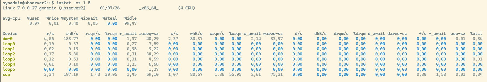
Dispositivos:
La columna Device te dice dónde mirar cuando analizas rendimiento de disco:
Si ves
sda→ estás viendo el disco físico entero.Si ves
sda1→ estás viendo la partición.Si ves
dm-0→ probablemente es tu volumen raíz (/), aunque físicamente esté ensda.Si ves
nvme0n1→ es un NVMe, así que esperas latencias más bajas.Si ves
loop0→ es un archivo montado como disco, normalmente usado por snaps o contenedores.
| Columna | Significado | Cómo leerlo / Interpretación |
|---|---|---|
| r/s | Lecturas por segundo | Alto = mucha carga de lectura; útil para ver si un proceso está leyendo intensivamente. |
| w/s | Escrituras por segundo | Alto = mucha carga de escritura; típico en BD, logs, backups. |
| rkB/s | KB leídos por segundo | Mide el volumen real de lectura; alto = operaciones pesadas. |
| wkB/s | KB escritos por segundo | Mide el volumen real de escritura; alto = procesos que generan muchos datos. |
| rrqm/s | Lecturas fusionadas por el scheduler | Alto = el kernel está agrupando lecturas, mejora rendimiento. |
| wrqm/s | Escrituras fusionadas por el scheduler | Alto = el kernel está agrupando escrituras, mejora rendimiento. |
| %rrqm | % de lecturas fusionadas | >20% suele indicar buena optimización del scheduler. |
| %wrqm | % de escrituras fusionadas | >20% indica que el disco está recibiendo operaciones agrupadas. |
| r_await | Tiempo medio de espera de lecturas (ms) | <10 ms excelente; >50 ms indica disco lento o saturado. |
| w_await | Tiempo medio de espera de escrituras (ms) | Igual que r_await: >50 ms es señal de cuello de botella. |
| await | Tiempo medio total de espera (lectura+escritura) | Métrica clave: >100 ms = saturación clara del dispositivo. |
| aqu-sz | Tamaño medio de la cola de I/O | >3–5 indica que el disco no da abasto. |
| svctm | Tiempo medio de servicio del disco (ms) | Si await ≫ svctm, el problema es la cola (no el disco). |
| %util | Porcentaje de uso del dispositivo | >90% = disco saturado; <60% = saludable. |
9 Red y conexiones
9.1 Mostrar la tabla de enrutamiento del sistema:
ip route
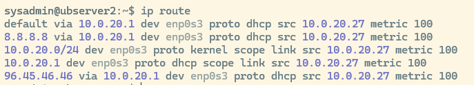
Vamos a ver lo que significa línea por línea
Ruta por defecto (default)
default via 10.0.20.1 dev enp0s3 proto dhcp src 10.0.20.27 metric 100default → todo tráfico que no tenga una ruta más específica
via 10.0.20.1 → se envía al router/gateway (puerta de enlace)
dev enp0s3 → por la interfaz de red enp0s3
src 10.0.20.27 → tu IP local
proto dhcp → esta ruta la creó el DHCP
metric 100 → prioridad (100 es normal)
Ruta específica
8.8.8.8 via 10.0.20.1 dev enp0s3 proto dhcp src 10.0.20.27 metric 100Algunos DHCP añaden rutas específicas hacia DNS externos. Tu router quiere asegurarse de que 8.8.8.8 siempre se alcanza por la puerta de enlace, sin depender de la ruta por defecto.
8.8.8.8 → Google DNS
via 10.0.20.1 → se envía al mismo gateway
proto dhcp → la añadió el servidor DHCP
Ruta de tu red local: Tu servidor sabe que todo lo que sea 10.0.20.x está en la red local, así que lo envía directamente por enp0s3.
10.0.20.0/24 dev enp0s3 proto kernel scope link src 10.0.20.27 metric 10010.0.20.0/24 → tu red local
dev enp0s3 → está directamente conectada
scope link → no necesita gateway
proto kernel → la creó el kernel automáticamente
Ruta directa hacia el gateway: Ruta específica hacia el router.
10.0.20.1 dev enp0s3 proto dhcp scope link src 10.0.20.27 metric 100Ruta específica hacia 96.45.46.46: Tu router quiere que ese host concreto (96.45.46.46) vaya por la puerta de enlace. Puede ser un DNS, un servidor de la operadora, o un servicio de red.
96.45.46.46 via 10.0.20.1 dev enp0s3 proto dhcp src 10.0.20.27 metric 100Tu tabla de rutas dice:
Tu servidor está en la red 10.0.20.0/24
Tu IP es 10.0.20.27
Tu puerta de enlace es 10.0.20.1
El DHCP ha añadido rutas específicas hacia:
8.8.8.8 (Google DNS)
96.45.46.46 (probablemente otro DNS o servicio del ISP)
Todo el tráfico que no sea de la red local va a 10.0.20.1.
Mostrar la tabla de enrutamiento del sistema: ip route
Vamos a ver lo que significa línea por línea
Ruta por defecto (default)
default via 10.0.20.1 dev enp0s3 proto dhcp src 10.0.20.27 metric 100default → todo tráfico que no tenga una ruta más específica
via 10.0.20.1 → se envía al router/gateway (puerta de enlace)
dev enp0s3 → por la interfaz de red enp0s3
src 10.0.20.27 → tu IP local
proto dhcp → esta ruta la creó el DHCP
metric 100 → prioridad (100 es normal)
Ruta específica
8.8.8.8 via 10.0.20.1 dev enp0s3 proto dhcp src 10.0.20.27 metric 100Algunos DHCP añaden rutas específicas hacia DNS externos. Tu router quiere asegurarse de que 8.8.8.8 siempre se alcanza por la puerta de enlace, sin depender de la ruta por defecto.
8.8.8.8 → Google DNS
via 10.0.20.1 → se envía al mismo gateway
proto dhcp → la añadió el servidor DHCP
Ruta de tu red local: Tu servidor sabe que todo lo que sea 10.0.20.x está en la red local, así que lo envía directamente por enp0s3.
10.0.20.0/24 dev enp0s3 proto kernel scope link src 10.0.20.27 metric 10010.0.20.0/24 → tu red local
dev enp0s3 → está directamente conectada
scope link → no necesita gateway
proto kernel → la creó el kernel automáticamente
Ruta directa hacia el gateway: Ruta específica hacia el router.
10.0.20.1 dev enp0s3 proto dhcp scope link src 10.0.20.27 metric 100Ruta específica hacia 96.45.46.46: Tu router quiere que ese host concreto (96.45.46.46) vaya por la puerta de enlace. Puede ser un DNS, un servidor de la operadora, o un servicio de red.
96.45.46.46 via 10.0.20.1 dev enp0s3 proto dhcp src 10.0.20.27 metric 100Tu tabla de rutas dice:
Tu servidor está en la red 10.0.20.0/24
Tu IP es 10.0.20.27
Tu puerta de enlace es 10.0.20.1
El DHCP ha añadido rutas específicas hacia:
8.8.8.8 (Google DNS)
96.45.46.46 (probablemente otro DNS o servicio del ISP)
Todo el tráfico que no sea de la red local va a 10.0.20.1.
9.2 Ver estadísticas de interfaces
Ejecutar: ip -s linkEste comando muestra todas las interfaces de red del sistema junto con estadísticas de tráfico (RX/TX), errores, paquetes descartados, etc. Es una herramienta muy útil para diagnosticar problemas de red.
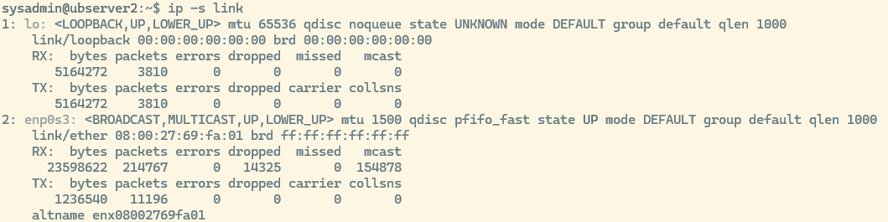
Voy a explicarlo por partes, interfaz por interfaz, y línea por línea.
9.2.1 loopback
lo: <LOOPBACK,UP,LOWER_UP> mtu 65536 qdisc noqueue state UNKNOWN mode DEFAULT group default qlen 1000lo → interfaz de loopback (127.0.0.1)
UP, LOWER_UP → está activa y funcionando
mtu 65536 → tamaño máximo de paquete (muy grande, típico del loopback)
qdisc noqueue → no usa cola de paquetes (no la necesita)
qlen 1000 → tamaño de cola teórica
9.2.1.1 RX (recepción)
| bytes | packets | errors | dropped | missed | mcast |
|---|---|---|---|---|---|
| 5164272 | 3810 | 0 | 0 | 0 | 0 |
bytes → 5.1 MB recibidos
packets → 3810 paquetes recibidos
errors → 0 → perfecto
dropped → 0 → no se han descartado paquetes
missed → 0 → no se han perdido por falta de buffer
mcast → 0 → no recibe multicast (normal en loopback)
9.2.1.2 TX (envío)
| bytes | packets | errors | dropped | carrier | collsns |
|---|---|---|---|---|---|
| 5164272 | 3810 | 0 | 0 | 0 | 0 |
Igual que RX → tráfico interno del sistema
carrier y collsns siempre 0 en loopback
9.2.2 Interfaz 2: enp0s3 (tu interfaz de red real)
enp0s3: <BROADCAST,MULTICAST,UP,LOWER_UP> mtu 1500 qdisc pfifo_fast state UP mode DEFAULT group default qlen 1000 enp0s3 → interfaz física (probablemente Ethernet virtual de VirtualBox)
BROADCAST, MULTICAST → soporta broadcast y multicast
UP, LOWER_UP → está activa y conectada
mtu 1500 → tamaño estándar de paquete Ethernet
qdisc pfifo_fast → cola FIFO por defecto
qlen 1000 → cola de 1000 paquetes
9.2.2.1 RX (recepción)
| bytes | packets | errors | dropped | missed | mcast |
|---|---|---|---|---|---|
| 23598622 | 214767 | 0 | 14325 | 0 | 154878 |
| Campo | Significado |
|---|---|
| bytes | tráfico recibido |
| packets | paquetes recibidos |
| errors | perfecto |
| dropped | ⚠️ paquetes descartados |
| missed | no se han perdido por buffer |
| mcast | paquetes multicast |
9.2.2.1.1 🔥 Interpretación importante:
- dropped = 14,325 → esto sí es relevante Significa que la interfaz ha descartado paquetes antes de entregarlos al kernel.
Esto suele deberse a:
Saturación de la cola de red
Paquetes multicast/broadcast excesivos
Problemas de rendimiento en la VM
Tráfico de red muy alto en la LAN
9.2.2.2 TX (envío)
| bytes | packets | errors | dropped | carrier | collsns |
|---|---|---|---|---|---|
| 1236540 | 11196 | 0 | 0 | 0 |
| Campo | Significado |
|---|---|
| bytes | tráfico enviado |
| packets | paquetes enviados |
| errors | perfecto |
| dropped | no se han descartado |
| carrier | sin problemas físicos |
| collsns | sin colisiones (normal en redes modernas) |
Conclusión: La interfaz envía sin problemas, pero recibe con descartes.
9.2.3 Línea final: altname
Código
altname enx08002769fa01 Esto es simplemente un nombre alternativo que el kernel asigna automáticamente basado en la MAC:
MAC:
08:00:27:69:fa:01Nombre alternativo:
enx08002769fa01
9.3 Ver conexiones activas
ss -tuna
lista todas las conexiones TCP y UDP, tanto:
abiertas
escuchando
establecidas
sockets internos del sistema
Con columnas:
Netid → tipo de socket (tcp/udp)
State → estado (LISTEN, ESTAB, UNCONN…)
Recv-Q → cola de recepción
Send-Q → cola de envío
Local Address:Port → IP y puerto local
Peer Address:Port → IP y puerto remoto
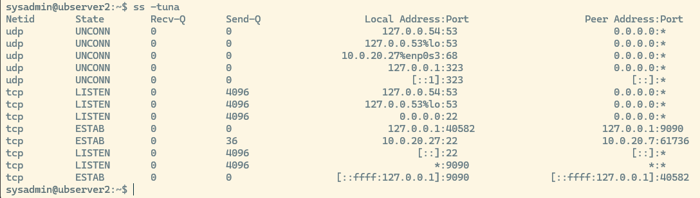
Servicios escuchando
SSH → puertos 22 (IPv4 e IPv6)
DNS (systemd-resolved) → puertos 53 TCP/UDP en loopback
Servicio en puerto 9090 → activo y con conexiones internas
Conexiones activas
SSH desde 10.0.20.7 → tu sesión actual
Conexión interna al servicio en 9090
UDP sockets
DHCP cliente (puerto 68)
NTP (puerto 323)
DNS (puerto 53)
10 Servicios con systemctl
10.1 Listar servicios en ejecución
systemctl list-units --type=service --state=running te muestra todos los servicios que están cargados y ejecutándose ahora mismo en tu sistema. La tabla tiene tres columnas importantes: LOAD, ACTIVE, SUB. Si sabes leer esas tres, sabes interpretar cualquier servicio de systemd.
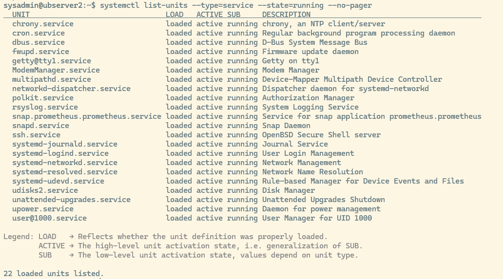
10.1.1 Load
| Valor | Significado |
|---|---|
| loaded | El archivo .service existe y systemd lo ha leído correctamente. |
| not-found | El archivo del servicio no existe, está corrupto o no se pudo cargar. |
| masked | El servicio está deshabilitado a propósito; no puede iniciarse. |
10.1.2 Active
| Valor | Significado |
|---|---|
| active | El servicio está funcionando. |
| inactive | El servicio está detenido. |
| failed | El servicio ha fallado. |
| activating | El servicio está arrancando. |
| deactivating | El servicio está parando. |
10.1.3 Sub
| Valor | Significado |
|---|---|
| running | El proceso del servicio está en ejecución. |
| exited | El servicio terminó correctamente (normal en servicios tipo “oneshot”). |
| dead | El servicio no está ejecutándose. |
| start-pre | Script previo al arranque del servicio. |
| start-post | Script posterior al arranque del servicio. |
| reload | El servicio está recargando su configuración. |
10.2 Ver servicios fallidos
systemctl --failed --no-pager
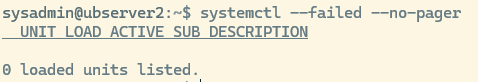
Consultar un servicio concreto
El comando systemctl status te da un informe completo del estado de un servicio gestionado por systemd. La salida siempre se divide en 5 partes:
Cabecera del servicio
Estado (LOAD / ACTIVE / SUB)
Información del proceso
Dependencias
Logs recientes del servicio
systemctl status {nombre_servicio} --no-pager. Ejemplo systemctl status systemd-journald.service --no-pager
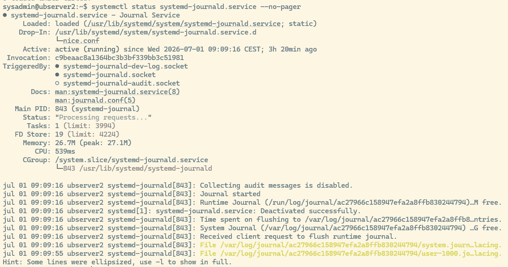
Cabecera del servicio
systemd-journald.service - Journal ServiceEstado (Loaded / Active / Sub)
Loaded: loaded (/usr/lib/systemd/system/systemd-journald.service; static) Active: active (running) since Wed 2026-07-01 09:09:16 CEST; 3h 20min agoDrop-In (si existe): El servicio tiene configuración adicional en un directorio
Invocation ID: sirve para correlacionar logs
TriggeredBy (sockets asociados) : Esto te dice qué sockets activan este servicio. ● → activos ○ → inactivos
Documentación: enlaces a documentación del servicio
Información del proceso: PID, estado interno, número de tareas, memoria usada, cpu consumida, ruta del proceso en cgroups y el comando exacto que se está ejecutando.
Logs recientes
10.3 Ver el archivo de unidad del servicio
systemctl cat {nombre_servicio} Ejemplo: systemctl cat systemd-journald.service muestra el archivo printipal del servicio
sirve para ver el contenido completo del archivo de unidad de un servicio de systemd.
Para:
Ver cómo está configurado un servicio.
Ver qué comando ejecuta.
Ver si tiene parámetros especiales.
Ver si tiene drop-ins (archivos adicionales que modifican la configuración).
Ver si el servicio está modificado por el administrador.
Es la forma más directa de inspeccionar la configuración real de un servicio.
10.4 Ver dependencias del servicio
systemctl list-dependencies {nombre_servicio} --no-pager . Ejemplo: systemctl list-dependencies systemd-journald.service --no-pager
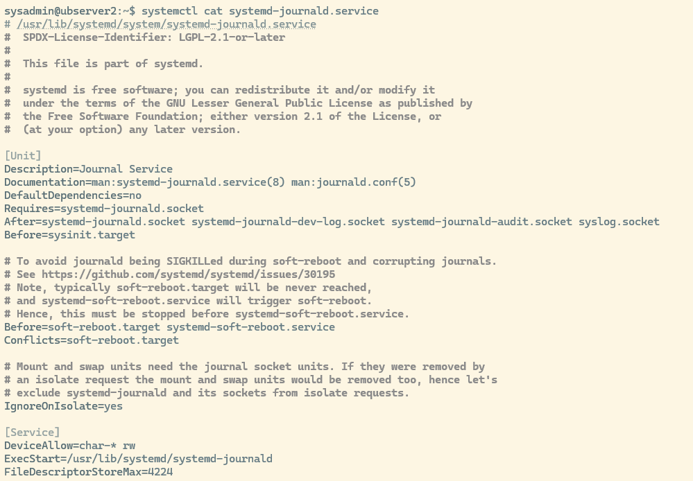
11 Logs y eventos con journalctl
Muestra eventos del arranque actual con prioridad desde advertencia hasta alerta.
journalctl -b -p warning..alert --no-pager
Opciones:
-b: arranque actual.-pwarning..alert: filtra por prioridad.--no-pager: muestra la salida directamente sin paginador.
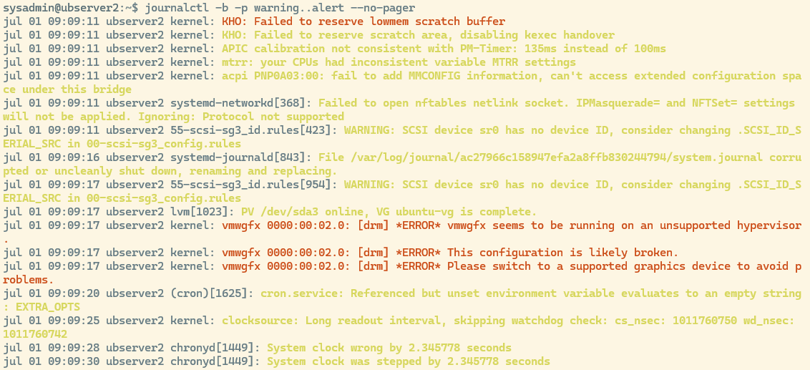
11.1 Ver logs de un servicio concreto
journalctl -u {nombre_servicio} -n {numero_lineas} --no-pager Ejemplo: journalctl -u systemd-journald.service -n 5 --no-pager Muestra los últimos 5 eventos del servicio indicado.
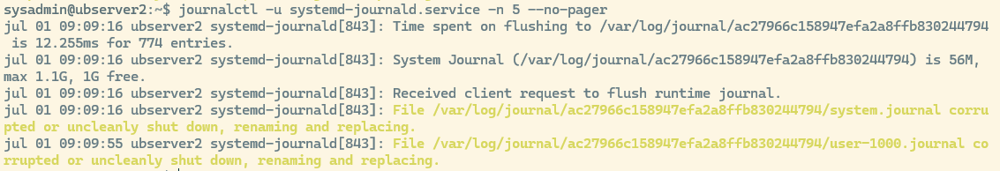
11.2 Ver mensajes del kernel
journalctl -k -n {numero_lineas} --no-pager. Ejemplo journalctl -k -n 30 --no-pager Muestra los últimos n mensajes del kernel.
11.2.1 Qué se espera ver
Mensajes relacionados con hardware, drivers, red, discos o arranque.